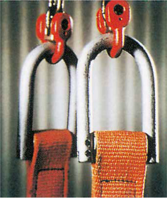

12. Kombinierte Anschlagmittel
Um für Anschlagzwecke sowohl die Handhabbarkeit als auch die Dauerhaftigkeit des Anschlagmittels sowie die Schonung der Last zu erreichen, werden verschiedene Anschlagmittel mit Ketten kombiniert:
- Seil – Kette – Seil; ein Seil kann unter der Last durchgeschoben werden. Der die Last umschlingende
Teil besteht aus einer Kette der Güteklasse 8, um beispielsweise beim Verladen
von Profilstahl den Verschleiß des Anschlagmittels gering zu halten. Bei
Belastung dreht das Seil die Kette etwas ein; die Kette sollte mindestens eine
Ketten-Nenndicke überdimensioniert und bei rauem Betrieb nicht unter 16 mm Ø
sein.
- Ketten mit Verkürzungseinrichtung – Seil; wenn Seile im Bereich der Last gewünscht werden und eine Verkürzungsmöglichkeit erforderlich ist, wird die Kette mit einem Verkürzungsglied ausgerüstet und die Kombination Kette mit Verkürzungsglied Seil – Kette gewählt.
- Kette – Hebeband (Bild 12-1); Hebebänder haben sich für den Transport von feinbearbeiteten Teilen und für viele andere Zwecke bewährt. Beschlagteile bieten für den Übergang von Ketten zu Hebebändern große Vorteile: Beim Verschleiß kann das Band leicht ausgetauscht werden. Die Kette hat eine sehr hohe Lebensdauer. Die Länge des Anschlagmittels kann durch Kettenverkürzungsglieder verändert werden.
- Kette – Polyesterrundschlinge; in gleicher Weise können jedoch nur mit speziellen Übergangsgliedern Rundschlingen mit Ketten verwendet werden. Man kann also so eine Kette im Baukastensystem mit den verschiedenen Möglichkeiten, wie Verkürzungseinrichtungen, Wirbeln, zusammenbauen und dann durch die Rundschlinge erreichen, dass die Last geschont wird.
Bei allen kombinierten Anschlagmitteln ist zu beachten, dass der Anhänger mit der Tragfähigkeit des am geringsten belastbaren Anschlagmittels ausgerüstet ist. Meistens wird dabei die Tragfähigkeit der Kette nicht voll ausgelastet. Umso wichtiger ist es, sich nicht auf das Gefühl zu verlassen und nicht mit einem Blick auf die Kette die Tragfähigkeit des kombinierten Anschlagmittels zu schätzen, sondern korrekt den Anhänger zu lesen.

Bild 12-1: Kombination Kette – Hebeband